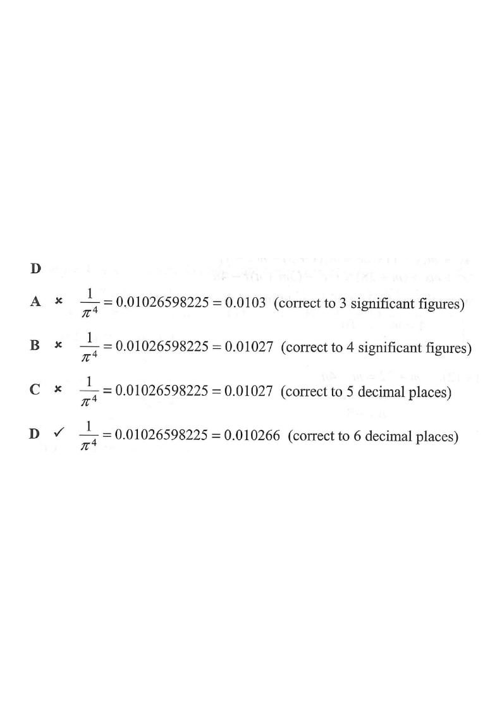

Step 1: the given expression 1 / π⁴ ≈ 0.01026598…
$$\frac{1}{\pi^{4}} = $$

Use $\pi \approx 3.14159265\ldots$ and compute $\dfrac{1}{\pi^{4}} = \pi^{-4}$.
| Quantity | Value |
|---|---|
| $\pi$ | 3.14159265… |
| $\pi^{4}$ | 97.40909103… |
| $\dfrac{1}{\pi^{4}}$ | 0.01026598… |
$$\frac{1}{\pi^{4}} = 0.01026\,598\ldots$$
The first non-zero digit occurs at the 2nd decimal place. This matters because significant figures are counted from the first non-zero digit.
Hint: significant figures do not start until the first non-zero digit — leading zeros never count.Digits of $0.01026\,598\ldots$ ignoring leading zeros: $\;1,\;0,\;2,\;6,\;5,\;9,\;8\ldots$
The 1st, 2nd, 3rd significant figures are $1,\,0,\,2$. The next digit is $\mathbf{6} \ge 5$, so we round up:
$$0.0102\,|\,6\ldots \;\to\; \mathbf{0.0103}$$
Option A says 0.0102, which is wrong.
Hint: a common trap — forgetting to round up when the next digit is 5 or more.The 4th significant figure is the digit $6$ in the 5th decimal place. The next digit is $\mathbf{5}$ (followed by more digits), so we still round up:
$$0.0102\,|\,65\,98\ldots \;\to\; \mathbf{0.01027}$$
Option B says 0.01025, which is wrong.
Hint: when the dropped part begins with 5 and is non-zero afterwards, always round up.Keep five digits after the decimal point: $0.01026\,|\,598\ldots$
The 6th decimal digit is $\mathbf{5}$, again followed by non-zero digits, so round up:
$$0.01026\,|\,598\ldots \;\to\; \mathbf{0.01027}$$
Option C says 0.01026, which is wrong.
Hint: 0.01026 598… rounds up because the discarded part is greater than half a unit.Keep six digits after the decimal point: $0.010265\,|\,98\ldots$
The 7th decimal digit is $\mathbf{9} \ge 5$, so round up:
$$0.010265\,|\,98\ldots \;\to\; \mathbf{0.010266}$$
This matches Option D exactly ✓
Hint: only Option D’s stated decimal-place value agrees with the true rounded value.Comparing all four statements:
| Option | Stated rounding | Correct value | Match? |
|---|---|---|---|
| A | 0.0102 (3 s.f.) | 0.0103 | ✗ |
| B | 0.01025 (4 s.f.) | 0.01027 | ✗ |
| C | 0.01026 (5 d.p.) | 0.01027 | ✗ |
| D | 0.010266 (6 d.p.) | 0.010266 | ✓ |